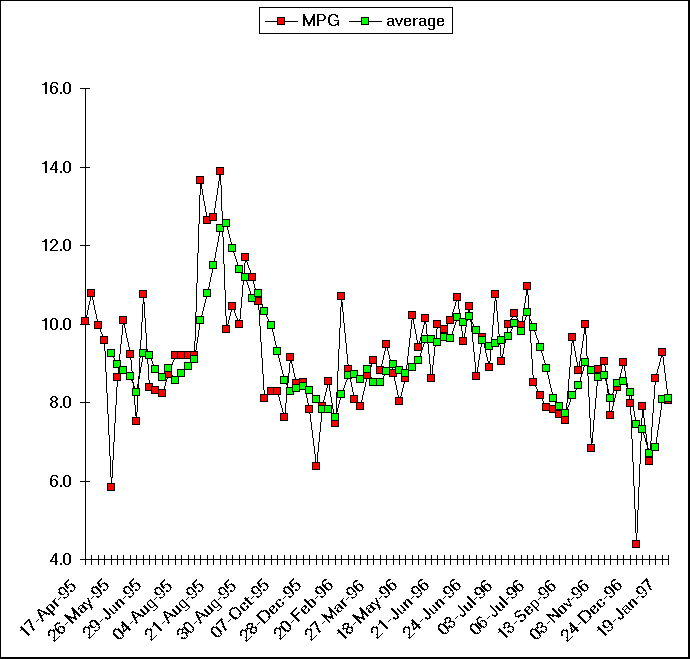

Graph and tables (following graph) were produced from Excel97. The average curve is a five point moving average. I really need to center the average, so imagine it shifted left 2 points.
With the 4.10 axle, RPMs are about 2200 in OD at 65 mph. This raises to about 3000 in 3rd. A 3.52 axle would be about 500 RPMs lower. At 2200 RPMs, the engine noise is hardly noticable. At 3000 it is quite noticable. I imagine 1700 is very silent.
Torque Converter lockup. When the Torque Converter goes into lockup in 3rd and OD you can feel the shift and see the RPMs drop about 200 - 300. Lockup is supposed to be possible in any gear, but I cannot tell if it is locked or unlocked in 1st and 2nd. At highway speeds in 3rd or OD, touching the brake peddle will kick out lockup. It then goes back to lockup after a few seconds.
The gears. Going up through the gears you notice 1st, 2nd, 3rd, OD, lockup; or 1st, 2nd, 3rd, lockup when OD disabled.
OD - Whenever you start the truck, OD is enabled. You have to press the dash switch to disable it (or downshift out of OD). The switch is momentary contact and controls a relay. The light on the switch is on when disabled. Around town, the truck will go into OD at relatively low speeds and you seldom notice the engine lugging.
OD to 3rd to OD at highway speeds. When it starts losing speed on a grade, I kick out OD until I get over the crest. It won't let me downshift until near 60 mph. Dropping to third, it also loses lockup. Speed climbs and it goes back to lockup. When I reengage OD, it again loses lockup (feel rpms jump) and shifts to OD then progresses to lockup.
Oil - I run Mobil 1 10-30 and change oil every 3000 miles.
The average curve (green) is a 5 point moving average. I really need to center it, so imagine it is shifted left 2 points.
The 4 points of 25 july 95 thru 18 Aug 95 were averaged. One gas station was cutting off the pump at $34 and it took us some time to catch-on.
The four highest points were our only long distance trip empty and not towing. It was from Seattle to Santa Barbara, CA. Averaged 13.2 mpg for those four points. Route was down I-5 and 101.
The 5 points following were the return trip with a 12' Uhaul. I would guess it weighed 2000 - 3000 lb. We came up 395 on the east side of the Sierras. Note that the first 3 points are much lower as we climbed through the high country.
20 June - 6 July 96 was a trip pulling the 17' Shasta. Seattle - Salt Lake - Moab - Mesa Verde - Canyon de Chelly - Tucson - Yuma - Ontario CA - Mono Lake (E of Yosemite) - Reno - Klamuth Falls - Eugene OR - Seattle. 3900 miles and averaged 9.8 mpg. 65 - 70 most of the way.
Looks like warmer weather might get noticably better mileage, but so many variables.
Sure dropped off abruptly after the 96 trip when we settled into my wife commuting.
Don't know why we got the 5.8 May 26, 95; nor the 6.4 Jan 12, 96.
The 4.4 Dec 29, 96 was during our storm and power outage. I let it idle several hours in a few trailer battery recharge sessions.
The last three points were the maiden voyage with the 28' Holiday Rambler. The few points before had some towing about 30 miles away while getting the trailer ready to travel. Looks like it may be 1 mpg less than the Shasta, but it is cooler weather also and I am running a lower octane.
All the Gas records with comments follow the chart.

The spreadsheet follows. In the comments I note if we were towing. I also note any exceptions.
The sheet is broken into pages. Go the the end of this one and I will explain the summaries.
| 1995 Dodge Ram Fuel History | |||||||||
| Date | Brand | City | Octane | Cost/Gal | Cost | Gals | Odo | MPG | Comments |
| 14-Apr-95 | Lynnwood, WA | Full Tank? | 25 | Took Posession of truck | |||||
| 17-Apr-95 | BP | Renton, WA | 87 | $1.219 | $34.03 | 27.9 | 306 | 10.1 | |
| 23-Apr-95 | BP | Renton, WA | 87 | $1.249 | $28.47 | 22.8 | 552 | 10.8 | |
| 29-Apr-95 | Chevron | Renton, WA | 87 | $1.279 | $35.50 | 27.8 | 829 | 10.0 | |
| 14-May-95 | BP | Renton, WA | 92 | $1.419 | $34.00 | 24.0 | 1059 | 9.6 | |
| 26-May-95 | BP | Renton, WA | 92 | $1.429 | $27.15 | 19.0 | 1170 | 5.8 | |
| 26-May-95 | Chevron | Ritzville, WA | 92 | $1.429 | $38.43 | 26.9 | 1402 | 8.6 | Renton to Ritzville w/ Trailer |
| 29-May-95 | Chevron | Coeur d'Alene, ID | 92 | $1.319 | $33.71 | 25.6 | 1660 | 10.1 | 135 miles w/ trailer |
| 29-May-95 | Texaco | Cle Elum, WA | 92 | $1.609 | $41.00 | 25.5 | 1895 | 9.2 | Coeur d'Alene-Cle Elum w/ Trailer |
| 10-Jun-95 | BP | Renton, WA | 87 | $1.299 | $31.97 | 24.6 | 2080 | 7.5 | 85 miles w/ trailer |
| 16-Jun-95 | BP | Renton, WA | 87 | $1.299 | $17.34 | 13.4 | 2224 | 10.7 | 100 miles w/o trailer |
| 29-Jun-95 | BP | Renton, WA | 87 | $1.279 | $31.65 | 24.7 | 2431 | 8.4 | 100 miles w/ trailer |
| 07-Jul-95 | BP | Renton, WA | 92 | $1.439 | $24.50 | 17.0 | 2572 | 8.3 | |
| 08-Jul-95 | Chevron | Ephrata, WA | 92 | $1.469 | $31.60 | 21.5 | 2749 | 8.2 | Renton to Ephrata w/ trailer |
| 09-Jul-95 | Texaco | Wenatchee, WA | 92 | $1.459 | $26.27 | 18.0 | 2906 | 8.7 | To Wenatchee w/ trailer |
| 25-Jul-95 | BP | Renton, WA | 87 | $1.289 | $34.00 | 26.3 | 3150 | 9.2 | 160 with trailer |
| 04-Aug-95 | BP | Renton, WA | 87 | $1.289 | $34.00 | 26.3 | 3356 | 9.2 | |
| 17-Aug-95 | BP | Renton, WA | 87 | $1.289 | $34.00 | 26.3 | 3577 | 9.2 | |
| 18-Aug-95 | BP | Renton, WA | 87 | $1.279 | $8.96 | 7.0 | 3609 | 9.2 | 4 aved as not filled |
| 19-Aug-95 | Texaco | Eugene, OR | 87 | $1.259 | $30.00 | 23.8 | 3934 | 13.7 | To Santa Barbara, empty |
| 20-Aug-95 | Chevron | Crescent City,CA | 87 | $1.359 | $27.72 | 20.4 | 4192 | 12.6 | To Santa Barbara, empty |
| 21-Aug-95 | Chevron | Petaluma, CA | 87 | $1.279 | $35.00 | 25.8 | 4520 | 12.7 | To Santa Barbara, empty |
| 21-Aug-95 | Mobil | Santa Maria, CA | 87 | $1.119 | $28.71 | 23.9 | 4852 | 13.9 | To Santa Barbara, empty |
| 27-Aug-95 | Texaco | Santa Barbara,CA | 87 | $1.299 | $28.80 | 20.6 | 5055 | 9.9 | |
| 28-Aug-95 | Texaco | Lone Pine, CA | 87 | $1.369 | $35.90 | 26.2 | 5329 | 10.5 | Return with U-Haul |
| Summary | $1.334 | $732.71 | 545.3 | 5304 | 9.8 | ||||
| Ave | Total | Total | Dist | Ave | |||||
The Summary lines are as follows from left to right.
All following sheets also have a value in the last column of the summary. It gives the overall average mpg since day 1.
| 1995 Dodge Ram Fuel History | |||||||||
| Date | Brand | City | Octane | Cost/Gal | Cost | Gals | Odo | MPG | Comments |
| 30-Aug-95 | Chevron | Lee Vining, CA | 89 | $1.659 | $24.45 | 14.7 | 5476 | 10.0 | Return with U-Haul |
| 30-Aug-95 | Texaco | Alturas, CA | 92 | $1.579 | $43.76 | 27.7 | 5800 | 11.7 | Return with U-Haul |
| 31-Aug-95 | Texaco | Creswell, OR | 89 | $1.409 | $37.75 | 26.8 | 6100 | 11.2 | Return with U-Haul |
| 02-Sep-95 | BP | Renton, WA | 87 | $1.239 | $37.30 | 30.1 | 6418 | 10.6 | Return with U-Haul |
| 14-Sep-95 | BP | Renton, WA | 92 | $1.459 | $18.60 | 12.7 | 6521 | 8.1 | |
| 17-Sep-95 | Chevron | Blaine, WA | 92 | $1.479 | $44.06 | 29.8 | 6768 | 8.3 | |
| 07-Oct-95 | BP | Renton, WA | 87 | $1.289 | $39.00 | 30.2 | 7018 | 8.3 | 120 w/o Trailer |
| 27-Oct-95 | BP | Renton, WA | 87 | $1.279 | $39.70 | 31.0 | 7254 | 7.6 | |
| 13-Nov-95 | Chevron | Renton, WA | 92 | $1.479 | $41.85 | 28.3 | 7513 | 9.2 | |
| 01-Dec-95 | Chevron | Renton, WA | 87 | $1.299 | $38.75 | 29.8 | 7766 | 8.5 | |
| 17-Dec-95 | BP | Renton, WA | 89 | $1.339 | $37.00 | 27.6 | 8001 | 8.5 | |
| 28-Dec-95 | BP | Renton, WA | 87 | $1.239 | $32.34 | 26.1 | 8205 | 7.8 | |
| 12-Jan-96 | Texaco | Renton, WA | 92 | $1.469 | $33.50 | 22.8 | 8350 | 6.4 | |
| 14-Jan-96 | BP | Leavenworth, WA | 92 | $1.549 | $30.39 | 19.6 | 8505 | 7.9 | Seattle - Leavenworth w/ trailer |
| 30-Jan-96 | Chevron | Renton, WA | 87 | $1.219 | $34.87 | 28.6 | 8749 | 8.5 | 155 w/ trailer, 89 w/o |
| 15-Feb-96 | Texaco | Lynnwood, WA | 87 | $1.239 | $29.19 | 23.6 | 8925 | 7.5 | |
| 20-Feb-96 | Chevron | Renton, WA | 87 | $1.249 | $35.44 | 28.4 | 9229 | 10.7 | |
| 02-Mar-96 | Chevron | Renton, WA | 87 | $1.249 | $35.20 | 28.2 | 9478 | 8.8 | |
| 19-Mar-96 | BP | Renton, WA | 87 | $1.219 | $34.00 | 27.9 | 9703 | 8.1 | highNot filled |
| 23-Mar-96 | Texaco | Ritzville, WA | 92 | $1.439 | $43.75 | 30.4 | 9943 | 7.9 | LowTrailer |
| 24-Mar-96 | Chevron | Moses Lake, WA | 92 | $1.419 | $36.81 | 25.9 | 10168 | 8.7 | Trailer |
| 27-Mar-96 | Chevron | Renton, WA | 87 | $1.249 | $30.87 | 24.7 | 10392 | 9.1 | 175 miles w/ trailer |
| 12-Apr-96 | Texaco | Bellevue, WA | 87 | $1.299 | $35.35 | 27.2 | 10632 | 8.8 | |
| 19-Apr-96 | Texaco | Blaine, WA | 92 | $1.579 | $39.21 | 26.5 | 10883 | 9.5 | Trailer |
| 20-Apr-96 | Chevron | Blaine, WA | 92 | $1.599 | $44.44 | 27.8 | 11126 | 8.7 | Trailer |
| 01-May-96 | Chevron | Renton, WA | 87 | $1.459 | $39.27 | 26.9 | 11342 | 8.0 | 113 miles with trailer |
| 18-May-96 | Chevron | Renton, WA | 87 | $1.479 | $42.70 | 28.9 | 11591 | 8.6 | |
| 30-May-96 | Chevron | Renton, WA | 87 | $1.479 | $40.01 | 27.1 | 11868 | 10.2 | |
| 15-Jun-96 | Chevron | Renton, WA | 87 | $1.479 | $42.31 | 28.6 | 12137 | 9.4 | |
| Summary | $1.394 | $1,061.87 | 767.9 | 6808 | 8.8 | 9.3 | |||
| Ave | Total | Total | Dist | Ave | |||||
| 1995 Dodge Ram Fuel History | |||||||||
| Date | Brand | City | Octane | Cost/Gal | Cost | Gals | Odo | MPG | Comments |
| 19-Jun-96 | BP | Renton,WA | 92 | $1.629 | $25.29 | 15.5 | 12294 | 10.1 | |
| 20-Jun-96 | Chevron | Stanfield, OR | 89 | $1.559 | $48.44 | 31.1 | 12562 | 8.6 | Trip Start |
| 21-Jun-96 | Chevron | Boise, ID | 92 | $1.539 | $38.65 | 25.1 | 12813 | 10.0 | |
| 21-Jun-96 | Chevron | Brigham City, UT | 91 | $1.519 | $44.44 | 29.3 | 13102 | 9.9 | |
| 22-Jun-96 | Texaco | Wellington, UT | 91 | $1.529 | $34.86 | 22.8 | 13332 | 10.1 | |
| 22-Jun-96 | Texaco | Moab, UT | 90 | $1.559 | $16.03 | 10.3 | 13442 | 10.7 | |
| 24-Jun-96 | Texaco | Cortez, CO | 90 | $1.539 | $31.50 | 20.5 | 13638 | 9.6 | |
| 24-Jun-96 | Thriftway | Chinle, AZ | 89 | $1.339 | $24.04 | 18.0 | 13826 | 10.4 | |
| 25-Jun-96 | Texaco | Gallup, NM | 91 | $1.449 | $16.30 | 11.3 | 13924 | 8.7 | |
| 25-Jun-96 | Texaco | Globe, AZ | 89 | $1.519 | $41.00 | 27.0 | 14185 | 9.7 | |
| 28-Jun-96 | Texaco | Tucson, AZ | 92 | $1.499 | $35.01 | 23.4 | 14393 | 8.9 | |
| 29-Jun-96 | Texaco | Yuma, AZ | 92 | $1.749 | $41.65 | 23.8 | 14649 | 10.8 | |
| 03-Jul-96 | Texaco | Upland, CA | 89 | $1.579 | $47.50 | 30.1 | 14921 | 9.0 | |
| 03-Jul-96 | Texaco | Bishop. CA | 89 | $1.629 | $44.55 | 27.4 | 15195 | 10.0 | Cost, miles, Av MPG follow |
| 05-Jul-96 | Texaco | Reno, NV | 89 | $1.679 | $39.00 | 23.2 | 15433 | 10.3 | $624.57 |
| 05-Jul-96 | Texaco | Klamuth Falls, OR | 92 | $1.559 | $45.00 | 28.9 | 15721 | 10.0 | 3906 |
| 06-Jul-96 | Texaco | Corvallis, OR | 92 | $1.659 | $34.50 | 20.8 | 15949 | 11.0 | 9.8 |
| 06-Jul-96 | BP | Renton,WA | 87 | $1.429 | $42.10 | 29.5 | 16200 | 8.5 | Trip end |
| 20-Jul-96 | BP | Renton,WA | 87 | $1.429 | $32.85 | 23.0 | 16388 | 8.2 | |
| 02-Aug-96 | BP | Renton,WA | 87 | $1.429 | $47.43 | 33.2 | 16649 | 7.9 | |
| 19-Aug-96 | BP | Renton,WA | 89 | $1.519 | $42.00 | 27.6 | 16865 | 7.8 | |
| 31-Aug-96 | BP | Renton,WA | 87 | $1.399 | $35.18 | 25.1 | 17058 | 7.7 | |
| 13-Sep-96 | Chevron | Renton,WA | 92 | $1.649 | $40.39 | 24.5 | 17243 | 7.6 | |
| 15-Sep-96 | Chevron | Blaine, WA | 92 | $1.599 | $41.12 | 25.7 | 17491 | 9.6 | |
| 29-Sep-96 | BP | Renton,WA | 87 | $1.399 | $47.70 | 34.1 | 17792 | 8.8 | |
| 11-Oct-96 | BP | Renton,WA | 87 | $1.379 | $40.00 | 27.3 | 18065 | 10.0 | |
| 01-Nov-96 | BP | Renton,WA | 87 | $1.369 | $33.33 | 24.3 | 18231 | 6.8 | |
| 03-Nov-96 | Chevron | Vancouver,WA | 87 | $1.339 | $29.19 | 21.8 | 18424 | 8.9 | With Shasta |
| 11-Nov-96 | BP | Renton,WA | 87 | $1.369 | $31.83 | 23.3 | 18635 | 9.1 | and back |
| Summary | $1.512 | $1,070.88 | 707.9 | 6498 | 9.3 | 9.3 | |||
| Ave | Total | Total | Dist | Ave | |||||
| 1995 Dodge Ram Fuel History | |||||||||
| Date | Brand | City | Octane | Cost/Gal | Cost | Gals | Odo | MPG | Comments |
| 25-Nov-96 | BP | Redmond,WA | 87 | $1.329 | $37.00 | 27.8 | 18848 | 7.7 | |
| 05-Dec-96 | Texaco | Renton,WA | 87 | $1.349 | $42.70 | 31.7 | 19114 | 8.4 | |
| 14-Dec-96 | Texaco | Renton,WA | 87 | $1.229 | $36.78 | 28.3 | 19369 | 9.0 | |
| 24-Dec-96 | BP | Renton,WA | 87 | $1.279 | $35.51 | 27.8 | 19591 | 8.0 | |
| 29-Dec-96 | BP | Renton,WA | 87 | $1.289 | $13.75 | 10.7 | 19638 | 4.4 | 3 hr idle to recharge Tr. Bat |
| 03-Jan-97 | Texaco | May Valley,WA | 87 | $1.319 | $35.25 | 26.7 | 19849 | 7.9 | 1 hr idle+tow hr |
| 17-Jan-97 | BP | Renton,WA | 87 | $1.289 | $33.87 | 26.3 | 20020 | 6.5 | Set tires to 55 & 55 |
| 19-Jan-97 | Union | Canon Beach,OR | 87 | $1.429 | $37.50 | 26.7 | 20250 | 8.6 | with HR |
| 19-Jan-97 | Texaco | Woodland,WA | 87 | $1.239 | $19.01 | 15.3 | 20392 | 9.3 | with HR |
| 30-Jan-97 | BP | Renton,WA | 87 | $1.299 | $36.01 | 27.7 | 20615 | 8.1 | 140 miles w/ HR |
| Summary | $1.305 | $327.38 | 249.0 | 1980 | 7.8 | 9.1 | |||
| Ave | Total | Total | Dist | Ave | |||||
Last Updated on 02/07/97
{kind=link}